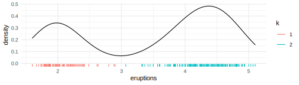

sift facilitates intelligent & efficient exploration of datasets.
# install.packages("devtools")
devtools::install_github("sccmckenzie/sift")sift is designed to work seamlessly with tidyverse.
1. sift::sift()
Imagine dplyr::filter() that includes neighboring observations.
Perhaps you remember the Utah monolith. The buzz surrounding its discovery (and disappearance) served as a welcome diversion from the otherwise upsetting twists and turns of 2020.

Suppose we are asked: what else was happening in the world around this time?
Let’s peruse the nyt2020 dataset to refresh our memory.
nyt2020 %>%
filter(str_detect(headline, "Monolith")) %>%
glimpse()
#> Rows: 1
#> Columns: 6
#> $ headline <chr> "Monolith Discovered in Utah Desert"
#> $ abstract <chr> "A metal monolith, planted firmly in the ground with no c~
#> $ byline <chr> "By Storyful"
#> $ pub_date <date> 2020-11-24
#> $ section_name <chr> "Science"
#> $ web_url <chr> "https://www.nytimes.com/video/science/earth/100000007471~The monolith story broke on 2020-11-24. Prior to writing this documentation, I certainly would not have remembered this happening in November specifically.
Let’s take a peek at other headlines from ±2 days.
nyt2020 %>%
filter(pub_date > "2020-11-22",
pub_date < "2020-11-26") %>%
select(headline, pub_date)
#> # A tibble: 15 x 2
#> headline pub_date
#> <chr> <date>
#> 1 Biden Has Chosen a Secretary of State 2020-11-23
#> 2 Pat Quinn, Who Promoted A.L.S. Ice Bucket Challenge, Dies at 37 2020-11-23
#> 3 Business Leaders, Citing Damage to Country, Urge Trump to Begin T~ 2020-11-23
#> 4 Pandemic Crowds Bring ‘Rivergeddon’ to Montana’s Rivers 2020-11-23
#> 5 No, Joe Biden did not have a maskless birthday party last week. 2020-11-23
#> 6 Monolith Discovered in Utah Desert 2020-11-24
#> 7 Coronavirus in N.Y.: Latest Updates 2020-11-24
#> 8 Two Darwin Notebooks, Missing for Decades, Were Most Likely Stolen 2020-11-24
#> 9 Recent Commercial Real Estate Transactions 2020-11-24
#> 10 Trump Administration Approves Start of Formal Transition to Biden 2020-11-24
#> 11 The C.D.C. is considering shortening its recommended quarantine p~ 2020-11-25
#> 12 A Poem of Gratitude From Nebraska 2020-11-25
#> 13 Casualties From Banned Cluster Bombs Nearly Doubled in 2019, Most~ 2020-11-25
#> 14 Iran Frees British-Australian Scholar in Prisoner Swap 2020-11-25
#> 15 A Poem of Gratitude From West Virginia 2020-11-25Notice that it took two steps to achieve the above result. We first had to find the date of the monolith story then perform a subsequent call to filter(). This procedure would quickly become a nuisance after a few iterations.
sift() provides an interface to perform this exact process in one step.
nyt2020 %>%
sift(pub_date, scope = 2, str_detect(headline, "Monolith")) %>%
select(headline, pub_date)
#> # A tibble: 15 x 2
#> headline pub_date
#> <chr> <date>
#> 1 Biden Has Chosen a Secretary of State 2020-11-23
#> 2 Pat Quinn, Who Promoted A.L.S. Ice Bucket Challenge, Dies at 37 2020-11-23
#> 3 Business Leaders, Citing Damage to Country, Urge Trump to Begin T~ 2020-11-23
#> 4 Pandemic Crowds Bring ‘Rivergeddon’ to Montana’s Rivers 2020-11-23
#> 5 No, Joe Biden did not have a maskless birthday party last week. 2020-11-23
#> 6 Monolith Discovered in Utah Desert 2020-11-24
#> 7 Coronavirus in N.Y.: Latest Updates 2020-11-24
#> 8 Two Darwin Notebooks, Missing for Decades, Were Most Likely Stolen 2020-11-24
#> 9 Recent Commercial Real Estate Transactions 2020-11-24
#> 10 Trump Administration Approves Start of Formal Transition to Biden 2020-11-24
#> 11 The C.D.C. is considering shortening its recommended quarantine p~ 2020-11-25
#> 12 A Poem of Gratitude From Nebraska 2020-11-25
#> 13 Casualties From Banned Cluster Bombs Nearly Doubled in 2019, Most~ 2020-11-25
#> 14 Iran Frees British-Australian Scholar in Prisoner Swap 2020-11-25
#> 15 A Poem of Gratitude From West Virginia 2020-11-25Under the hood, sift() passes str_detect(headline, "Monolith") to dplyr::filter(), then augments the filtered observations to include any rows falling in ±2 day window (specified by pub_date and scope = 2).
2. sift::break_join()
Harness combined power of dplyr::left_join() & findInterval().
Take a look at the structure of us_uk_pop and us_uk_leaders below. How would you join these two datasets together? Specifically, we want each row in us_uk_pop to contain information (name, party) for the leader at that time.
us_uk_pop %>%
group_by(country) %>%
slice_head(n = 3)
#> # A tibble: 6 x 3
#> # Groups: country [2]
#> country date population
#> <chr> <date> <int>
#> 1 UK 1995-01-21 57997197
#> 2 UK 1996-01-19 58168519
#> 3 UK 1997-01-21 58346633
#> 4 USA 1995-01-20 268039654
#> 5 USA 1996-01-20 271231546
#> 6 USA 1997-01-19 274606475
us_uk_leaders
#> # A tibble: 11 x 4
#> country name start party
#> <chr> <chr> <date> <chr>
#> 1 USA Bush 1989-01-20 Republican
#> 2 USA Clinton 1993-01-20 Democratic
#> 3 USA Bush 2001-01-20 Republican
#> 4 USA Obama 2009-01-20 Democratic
#> 5 UK Thatcher 1979-05-04 Conservative
#> 6 UK Major 1990-11-28 Conservative
#> 7 UK Blair 1997-05-02 Labour
#> 8 UK Brown 2007-06-27 Labour
#> 9 UK Cameron 2010-05-11 Conservative
#> 10 UK May 2016-07-13 Conservative
#> 11 UK Johnson 2019-07-24 ConservativeIf you look closely at the dates in us_uk_pop, they typically fall around January 20th (US inauguration day). Joining by country & year(date/start) would sweep this inconvenient detail under the rug.
For one country alone, we could use findInterval.
us_uk_pop %>%
filter(country == "USA") %>%
mutate(name = filter(us_uk_leaders, country == "USA")$name[findInterval(date, filter(us_uk_leaders, country == "USA")$start)])
#> # A tibble: 19 x 4
#> country date population name
#> <chr> <date> <int> <chr>
#> 1 USA 1995-01-20 268039654 Clinton
#> 2 USA 1996-01-20 271231546 Clinton
#> 3 USA 1997-01-19 274606475 Clinton
#> 4 USA 1998-01-20 278053607 Clinton
#> 5 USA 1999-01-20 281419130 Clinton
#> 6 USA 2000-01-19 284594395 Clinton
#> 7 USA 2001-01-18 287532638 Clinton
#> 8 USA 2002-01-19 290270187 Bush
#> 9 USA 2003-01-18 292883010 Bush
#> 10 USA 2004-01-17 295487267 Bush
#> 11 USA 2005-01-19 298165797 Bush
#> 12 USA 2006-01-19 300942917 Bush
#> 13 USA 2007-01-21 303786752 Bush
#> 14 USA 2008-01-21 306657153 Bush
#> 15 USA 2009-01-21 309491893 Obama
#> 16 USA 2010-01-18 312247116 Obama
#> 17 USA 2011-01-18 314911752 Obama
#> 18 USA 2012-01-19 317505266 Obama
#> 19 USA 2013-01-21 320050716 ObamaThe above code is somewhat unintelligible. Additionally, there is no straightforward way to accommodate UK & USA rows.
break_join() provides a simple interface leveraging functionality of dplyr::left_join() and findInterval().
break_join(us_uk_pop, us_uk_leaders, brk = c("date" = "start"))
#> Joining, by = "country"
#> # A tibble: 38 x 5
#> country date population name party
#> <chr> <date> <int> <chr> <chr>
#> 1 USA 1995-01-20 268039654 Clinton Democratic
#> 2 USA 1996-01-20 271231546 Clinton Democratic
#> 3 USA 1997-01-19 274606475 Clinton Democratic
#> 4 USA 1998-01-20 278053607 Clinton Democratic
#> 5 USA 1999-01-20 281419130 Clinton Democratic
#> 6 USA 2000-01-19 284594395 Clinton Democratic
#> 7 USA 2001-01-18 287532638 Clinton Democratic
#> 8 USA 2002-01-19 290270187 Bush Republican
#> 9 USA 2003-01-18 292883010 Bush Republican
#> 10 USA 2004-01-17 295487267 Bush Republican
#> # ... with 28 more rowsNotice that country was detected as a common variable (courtesy of dplyr::left_join()).
Alternatively, we could have supplied by explicitly.
# effectively the same as above call
break_join(us_uk_pop, us_uk_leaders, brk = c("date" = "start"), by = "country")Additional arguments supplied to ... will be automatically directed to dplyr::left_join() and findInterval().
set.seed(1)
a <- tibble(x = 1:5, y = runif(5, 4, 6))
b <- tibble(y = c(4, 5), z = c("A", "B"))
break_join(a, b, brk = "y")
#> # A tibble: 5 x 3
#> x y z
#> <int> <dbl> <chr>
#> 1 5 4.40 A
#> 2 1 4.53 A
#> 3 2 4.74 A
#> 4 3 5.15 B
#> 5 4 5.82 B
break_join(a, b, brk = "y", all.inside = TRUE)
#> # A tibble: 5 x 3
#> x y z
#> <int> <dbl> <chr>
#> 1 5 4.40 A
#> 2 1 4.53 A
#> 3 2 4.74 A
#> 4 3 5.15 A
#> 5 4 5.82 A
3. sift::kluster()
Imagine 1D K-means, except K is chosen automatically.
Consider the faithful dataset.
Density plot below clearly demonstrates there are 2 clusters of eruptions.

Currently, these clusters are implicit, meaning we do not have a categorical variable associating each observation with a cluster. We could manually assign clusters by drawing a line at, say, 3.0.
kluster() does this automatically - no extra inputs needed.
k <- kluster(faithful$eruptions)